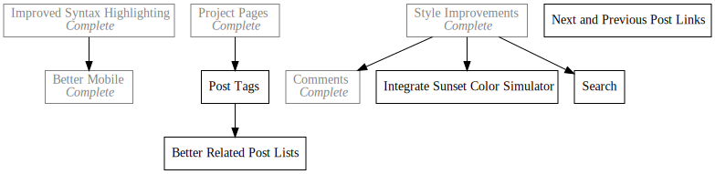

Daily Blog
Daily Programming Blog
2019-02-07

Starting on February 7th 2019 I embarked on an adventure to make tangible and documented progress on a project every day for a month. I started this project after being frustrated with lack luster progress on my personal projects and after looking through the archives of Beeple's Daily Posts. I was greatly impressed by the consistency and sense of progress shown in his work, and decided to try my hand at something similar, but for programming.
The initial commitment is to do a daily blog post on something programming related every day for a month, and then re-evaluate. Being 12 days in at the time of writing this though, I can already say I am finding the project extremely satisfying and I hope I will continue.
The archive containing all of the daily posts can be found here.
Dev Log
Some of the daily posts will be somewhat meta about the project, and about improvements to the site. I will log them here.
Day1 - Here Goes Nothing
Day12 - Project Pages
Day13 - Rusty Mandelbrot
Day14 - Blog Style Updates
Day51 - Project Link Cleanup